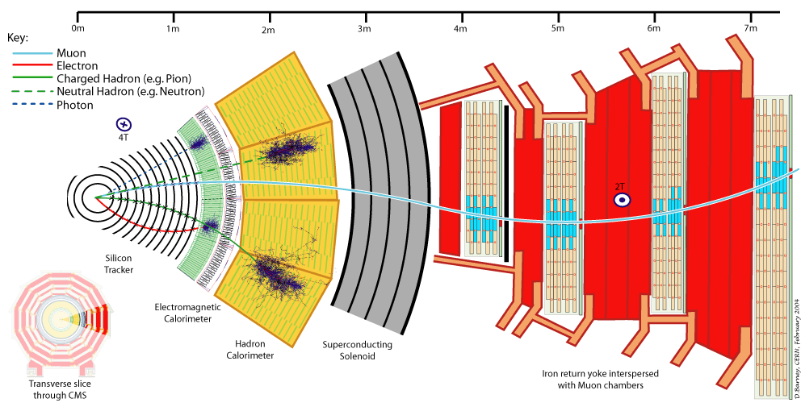

Esittelymateriaali¶
CERN¶
CERN, eli Euroopan hiukkasfysiikan tutkimuskeskus sijaitsee Ranskan ja Sveitsin rajalla lähellä Geneveä. Se on vuonna 1954 perustettu kansainvälinen organisaatio, johon kuuluu 23 varsinaista jäsenmaata, mukaanlukien Suomi. CERN:ssä yritetään selvittää, mistä maailmankaikkeutemme koostuu ja miten se toimii. Aineen pienimpien rakenneosasten tutkiminen onnistuu kiihdyttämällä ja törmäyttämällä hiukkasia hiukkaskiihdyttimessä. Hiukkasten törmätessä toisiinsa lähes valonnopeudella syntyy valtava määrä energiaa, joka voi muuttua uusiksi hiukkasiksi. Näitä törmäystapahtumissa syntyneitä hiukkasia ja niiden ominaisuuksia tutkitaan hiukkasilmaisimilla.
LHC¶
LHC (Large Hadron Collider), eli suuri hadronitörmäytin, on CERN:ssä sijaitseva maailman suurin hiukkaskiihdytin. Se on 27km pitkä synkrotronikiihdytin, jossa kiihdytetään pääasiassa protoneja. Protonit ovat peräisin vetykaasupullosta ionisoimalla vetyä sähkökentän avulla. Ennen kuin protonit ohjataan LHC:hen, ne ohjataan esikiihdytettäviksi useammalle eri esikiihdyttimelle. LHC:hen saapuessaan protonit ovat saavuttaneet jo 450 GeV energian. Protonit kulkevat LHC:n sisällä kahdessa vastakkaisiin suuntiin kulkevassa protonisäteessä. Molemmat säteet sisältävät tasaisin välein 2808 protonikimppua, jossa kussakin on noin \( 1.2\cdot 10^{11} \) protonia. Kimput ohjataan törmäämään toisiinsa neljällä eri koeasemalla eri puolilla LHC:ta. Vaikka kimpuissa on valtava määrä protoneita ja kimpun läpimitta on ainoastaan ihmisen hiuksen luokkaa, kahden kimpun kohdatessa syntyy ainoastaan joitakin kymmeniä törmäystapahtumia. Protonit kulkevat kuitenkin lähestulkoon valonnopeudella, joten LHC:ssa tapahtuu noin miljardi törmäystä joka sekunti.
CMS¶
CMS (Compact Muon Solenoid) on yksi LHC:n neljästä hiukkasilmaisimesta. Se on sylinterimäinen 21 metriä pitkä ja 15 metriä halkaisijaltaan oleva massiivinen laite, mutta on nimensä mukaisesti kompakti siihen nähden, kuinka paljon laitteistoa siitä löytyy. Ilmaisimessa on useita kerroksia, joissa törmäystapahtumissa syntyneet eri tyyppiset hiukkaset voidaan tunnistaa. Voit tutustua kattavasti CMS-koeasemaan ja sen toimintaan täältä.
Alla olevasta kuvasta voit myös tutustua CMS-ilmaisimen kerroksiin ja toimintaan. Kuvassa on poikkileikkaus ilmaisimesta, johon on piirretty eri tyyppisten hiukkasten radat ilmaisimessa. Törmäys tapahtuu kuvan vasemmassa reunassa olevan ympyrän keskellä. Protonisäteistä toinen kulkee ulospäin tasosta ja toinen tason sisään. Kuvasta nähdään, että esimerkiksi varatut hadronit kaareutuvat ilmaisimen magneettikentässä ja pysähtyvät hadronikalorimetriin.
 Poikkileikkaus CMS-ilmaisimen kerroksista. (Credit: CERN)
Hiukkasfyysikon päivä¶
Luulitko tietäväsi millaista fyysikon elämä on? Et ole varmasti nähnyt sitä tällä tavalla. Videolla näet Tšekkiläisen fyysikon tyypillisen päivän seuraamalla häntä livenä sekä animaatioiden kautta ja opit samalla upeita faktoja hiukkasfysiikasta ja sen tutkimuksesta (Kesto 30:49).
Linkkejä¶
Miten tekoälyä hyödynnetään CERN:ssä? |